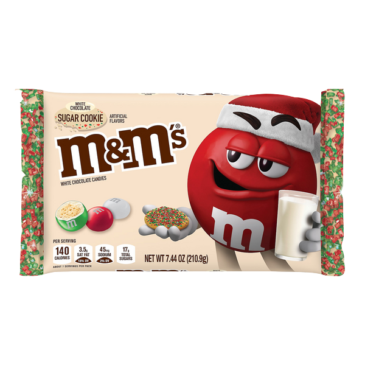

If you have diabetes this world is not for you! Here you will find all kinds of candies. Caramel and jam drip off the walls. You will fill your mouth with many flavors. Cavities will be your best friends. It will be so difficult to walk that you will have to learn to fly.

"Halloween Candy" by Rochelle Hartman is licensed under CC BY 2.0

"Brick-moji: Smiling face with smiling eyes" by Ochre Jelly is licensed under CC PDM 1.0